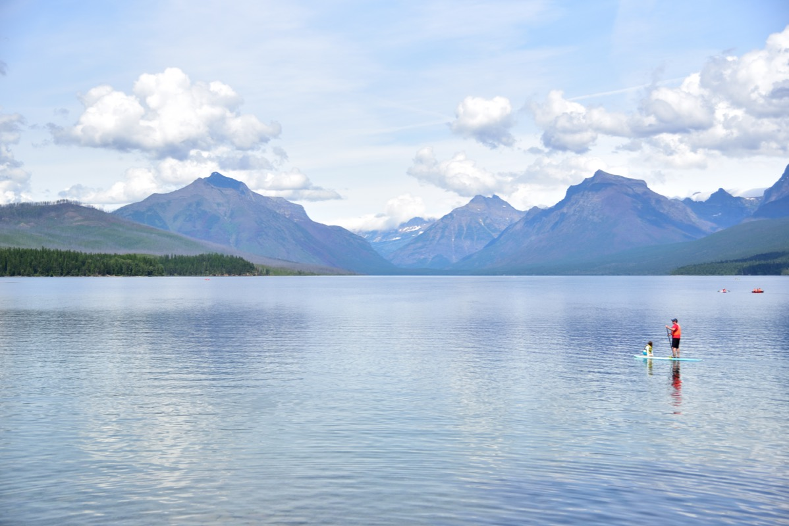

Trip to Glacier National Park, Montana
In the heart of Montana, right at the Canadian border, lies the gorgeous Glacier National Park filled with magnificent mountains, the glamorous glaciers and lustrous lakes.
Day 1: Spokane
We flew into Spokane (~5 hours from the park) on the night of July 4th, 2019. We stayed the night there and started for the park the next morning.
Day 2: West Glacier
Around 1pm, we reached the west end of Lake MacDonald.
We grabbed a bite at the nearby Eddie’s cafe and headed out east along the Going to the Sun road. It’s hard not to stop at every lookout point along Lake MacDonald, which itself is a tiny part of the park! We stopped at one, to take pictures.
Our next stop was the Lake McDonald lodge (we weren’t able to book lodging here). The lodge has a rustic feel and has a private entrance to the lake. There are some food options here as well. We ate at Jammer Joe’s and headed onwards.
Once past the lake, we were greeted by the gushing whitewaters of the McDonald creek. The turquoise waters with the lush background made for some beautiful pictures.
Next, we drove past the weeping wall, which had a rather magical background

Right opposite the weeping wall are beautiful meadows with views of the hanging valley

Up next was the hike we actually wanted to complete that day, the Hidden Lake Overlook. We reached the Logan pass visitor center around 9 pm and started out on a brisk hike while there was still some daylight. The views here, like everywhere else in this park, were mystical.

It got a bit chilly and parts of the trail were icy
But we made it to the end!

Day 3: Logan Pass and Swiftcurrent Trail
We reached Logan pass visitor center ~10am and wanted to hike (part of) the Highline trail. But unfortunately the parking lot was full :(

So we took a few pictures and drove further eastwards. We made a stop at Saint Mary Lake before exiting the park from the east exit.
For lunch, we were extremely fortunate to find this restaurant named Johnson’s. They had the most amazing sandwiches and their huckleberry ice-cream is not to be missed!

Entering Many Glacier
Post lunch we headed to the Many Glacier area and things got dramatically more exciting here. Around 3pm, we checked into our cozy Historic Cabin at the Swiftcurrent Motor Inn. This is a cheaper alternative to the nearby Many Glacier Hotel and is right at the Swiftcurrent trailhead and has a more camping-like feel (no private bath for instance).
Swiftcurrent Trail
Without much further ado, we headed out to hike the Swiftcurrent trail. The experience of hiking amid alpine lakes and flora against a background of glaciers is quite surreal.

A couple hours into the hike the weather took a sudden turn from sunny to thunderstorm so we turned around at the Bullhead Lake.

For dinner, we headed to the (quite fancy!) restaurant at the Many Glacier Hotel.
Day 4: Iceberg lake trail
On the last day we chose to hike the Iceberg Lake Trail (we wanted to do the Grinnell Glacier hike as well but we had time for just one, so that’s for next time :-) ). This was a gorgeous hike filled with majestic views and wildflowers.
The lake itself is a perfect glacial blue and made for a perfect lunch spot before the hike back.

After the hike, we rented a paddle boat and spent an hour paddling the calm waters of the Swiftcurrent lake, still mesmerized by the beauty of this miraculous park.